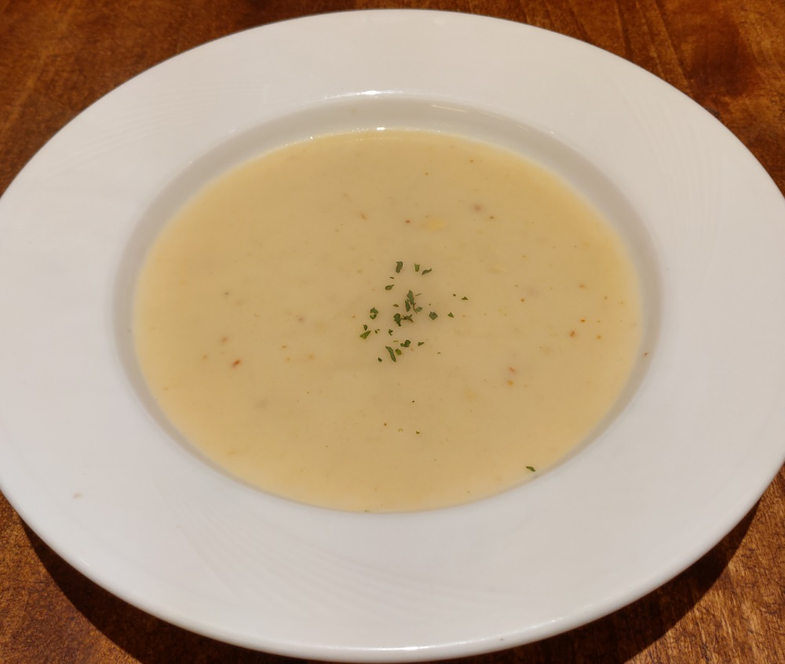
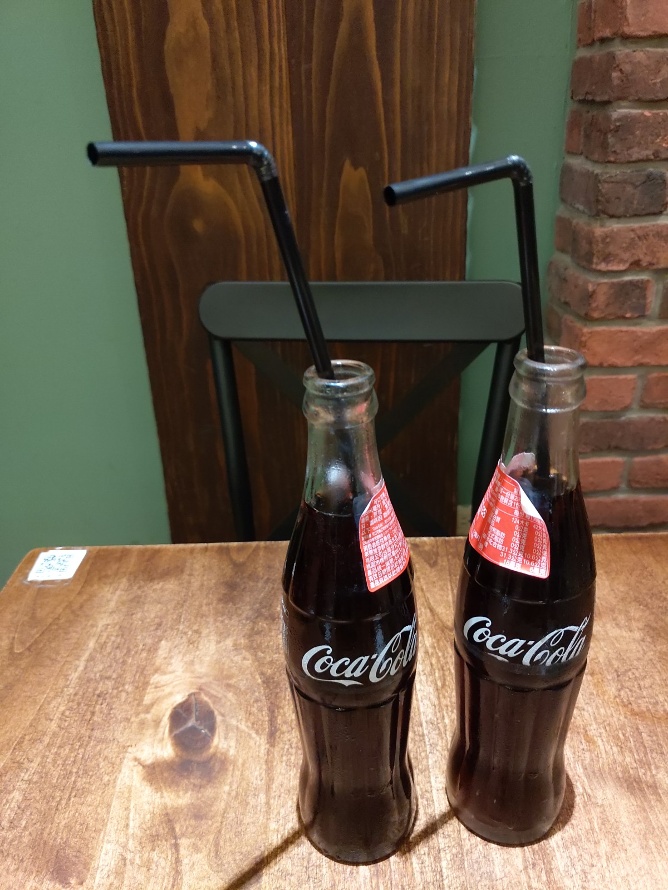
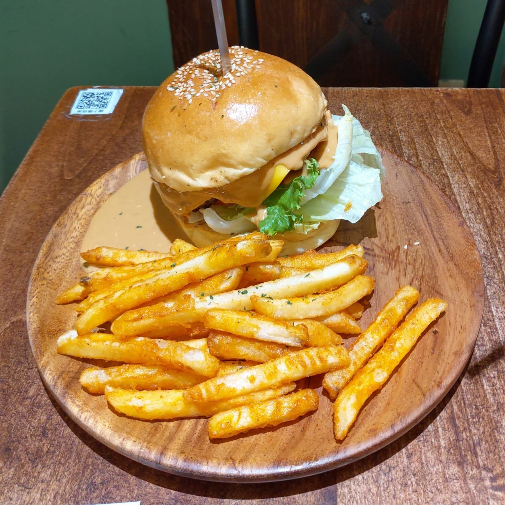
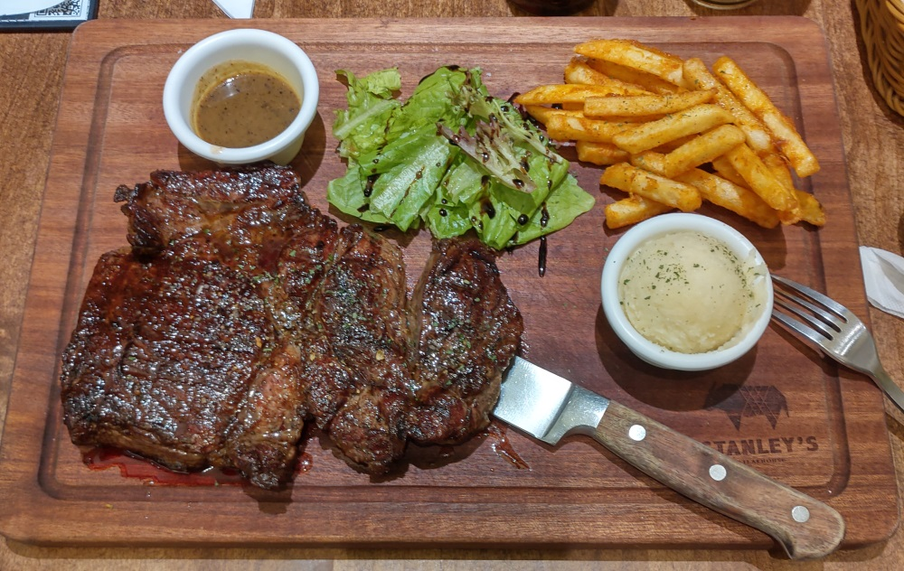

[竹北] STANLEY’s Steakhouse ChuPei City 史坦利美式牛排 竹北店
STANLEY’s Steakhouse ChuPei City 史坦利美式牛排 竹北店， 這是間優秀的牛排店，先在新竹市成功站穩了，然後就開這間 竹北店，熱門時段常常客滿，都要找冷門時段才能去吃。之後再搞 成 食時創新餐飲集團，集團內好幾間店，還有西班牙餐廳， 火鍋，越南河粉。看起來已經找到成功的方程式，然後複製好 幾次了，真是厲害。
之前 食時創新餐飲集團 招募會員，剛好我需要多吃牛肉補鐵， 就加入了。 這個會員制的程式善用了 Facebook Messenger API ， 跟其他以手機、簡訊為基礎的會員程式，好用太多了。可以隨時 在Facebook Messenger 裡面，跟 食時創新餐飲集團 這位 FB User， 執行一些命令，例如 查所有禮物卷 等。發送生日抽獎券 也是利用 Facebook Messenger 通知。
之前發給我生日抽獎券，我就去吃一次牛排，然後抽獎券抽到 花生醬牛肉漢堡。 所以就再來吃一次牛排補鐵，然後花生醬 牛肉漢堡給我女兒吃。
這間店也很多人寫了，我主要是講我愛點的 22 盎司莎朗牛排， 定價 690 元，再加服務費。今天有再加點附餐，選了湯跟可樂。  
花生醬牛肉漢堡，想到它是免錢的，就開心啦。 
主角來啦，這份 22 盎司莎朗牛排 可能有人嫌筋多難咬等， 可是恰巧就是適合我。我也試過 Stanley 其他更貴的牛排， 也去別間嚐鮮了狂貴的 和牛牛排，可是那些更貴的牛排， 軟到不習慣，還超油。 當初慕名去吃和牛，吃到後， 就是覺得又貴又難吃，算了，本命如此，從此乖乖吃 Stanley 的 莎朗牛排，省下買和牛的錢了。
Stanley 的莎朗牛排，是用炭火烤的，坊間已經很多餐廳 改用舒肥機了，我的看法跟我尊敬的 滴口水Jeff 一樣， 炭火烤的 比 舒肥加熱 好吃太多了，特別是直火才有可能 產生 梅納反應，舒肥是不可能了。  不過Stanley莎朗牛排我吃很多次了，就今天有點失誤， 點了七分熟，可是血水一直冒出來，淹到1/4個盤子了， 到後來實在受不了了，請服務生送回去再烤一下，強調 希望不要見血即可，服務生很不錯，沒什麼抱怨，就 趕快請廚房加強，改用瓷盤送回來，果然沒血水了，牛 肉中間的紅色也大幅減少。
Stanley 的 薯條，薯泥 也算是招牌，大概集團有優秀廚師 訂下 SOP 吧，薯條感覺就是炸的比別人好吃，薯泥也是 綿密好吃。
目前會員點數累積 16 點的樣子，哈哈，還會再去吃 22 盎司 莎朗牛排 的。